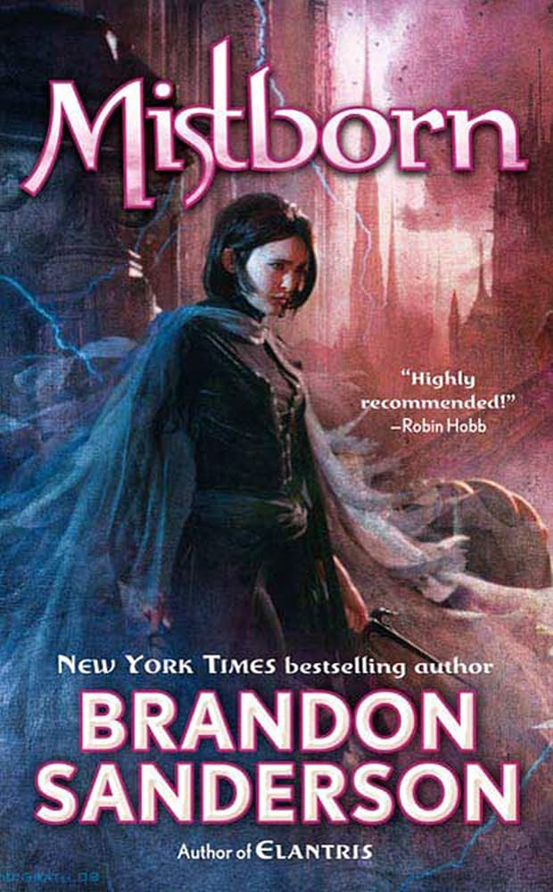

Mistborn: Burning Metal, Breaking Empires

If Stormlight is the slow-burn epic, Mistborn is Sanderson proving he can pull off a tight, heist-driven trilogy just as hard. The Final Empire, The Well of Ascension, The Hero of Ages — tore through all three, and this might honestly be the most fun the Cosmere's been for me yet.
Allomancy is the best magic system I've heard
Burning metal for powers sounds simple on paper, but the way it escalates — pushing and pulling on shit, the physics of it, fights turning into full-on aerial chess matches — scratches the exact same itch as a good LitRPG stat sheet. Just dressed up in trench coats and ash-fall skies instead of status screens.
Kelsier and Vin
Kelsier's one of the best "final job" heist leads I've ever come across, full stop, and Vin's growth over the trilogy is the actual backbone of the story. Watching her go from paranoid survival-mode thief to someone who can actually trust people — while also turning into someone terrifying — is exactly the kind of arc that makes a 30-plus hour trilogy fly by.
The ending of Hero of Ages is one of the best trilogy closers I've ever listened to, period — everything Sanderson set up pays off in a way that made me pull over the damn car for a second. Sits right near the top of my Cosmere list, right up there with Stormlight.